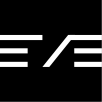

放模型与运行时配置，决定 agent 的基础能力边界。
常驻系统提示词，定义角色、目标和工作方式。
工具是 typed functions，技能是按需加载的程序化步骤。
把消息通道和定时任务也纳入同一目录树。
项目结构天然可读，agent 的意图不只在代码里，也在目录名和 markdown 里。
工具、技能、频道、调度器按文件组织，适合逐步扩展而不是一次写死。
持续任务、消息流、恢复和命令入口更像一个系统，而不是单次推理 demo。
npx eve@latest init my-agent 会创建目录、初始化 git、安装依赖并进入交互式终端界面。
在现有应用里执行 npx eve@latest init .，把 agent 结构落到当前仓库，而不是另起炉灶。
| 类型 | 判断 | 原因 |
|---|---|---|
| 适合 | 要长期运行的 agent 项目 | 需要工具、技能、消息通道、调度任务和持久状态一起协作。 |
| 适合 | 喜欢目录即文档的团队 | 把协议、配置与操作入口都写在文件系统里，便于审查和协作。 |
| 不适合 | 只想要一个薄薄 SDK 封装 | 如果目标只是快速调一个模型，eve 的系统化结构会显得偏重。 |
| 不适合 | 不打算维护持久状态 | 它的价值主要来自 durable workflow，而不是一次性脚本。 |